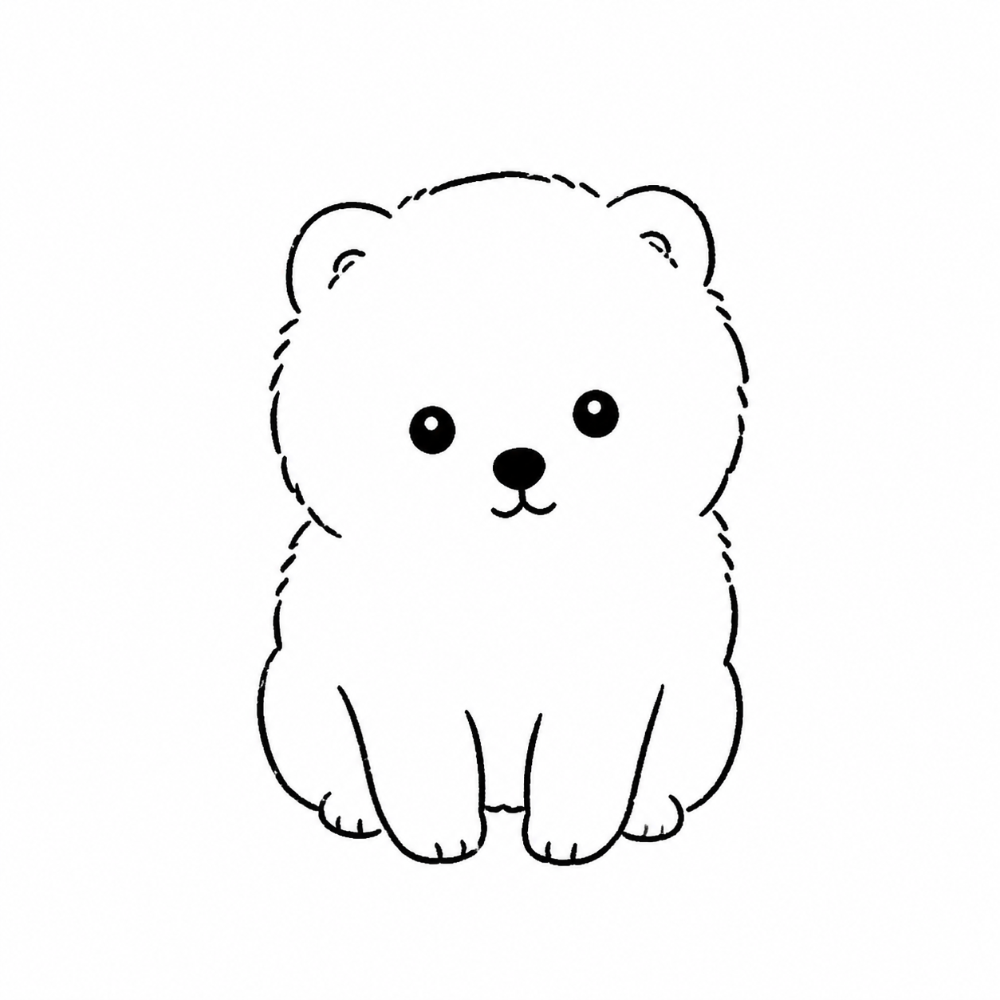

Results · run_20260819_234247
실제 Iteration 결과
Original

실제 입력 이미지
Iteration 1

content
0.48
style
0.96
overall
0.58
Make the ears smaller, rounder, and lower, embedded into the upper sides of the head instead of tall sharp points.
Create a very simple hand-drawn black line doodle of the reference Pomeranian puppy on a plain white background. Keep the centered front-facing seated pose, large simple head, dot eyes, small nose, and primitive circles/loose lines. Refine only two structural points: make the ears smaller, rounder, and lower so they feel embedded in the upper sides of the head; make the seated body more compact with front legs closer together and side paws less spread outward. No realistic fur, no advanced shading, no digital painting, no 3D rendering, no color, no text, no watermark.
Iteration 3
아직 실행 결과 없음
Iteration 5
아직 실행 결과 없음
Iteration 2

content
0.57
style
0.94
overall
0.64
Adjust the ears from round bear-like bumps into small rounded-triangle Pomeranian ears set into the upper sides of the head.
Create a very simple hand-drawn black line doodle of the reference Pomeranian puppy on a plain white background. Keep the centered front-facing seated pose, compact seated body, front legs close together, dot eyes, small nose, and primitive line style. Refine only two structural points: change the round bear-like ears into small rounded-triangle Pomeranian ears embedded in the upper sides of the head; narrow the head slightly into a rounded-square fluffy silhouette instead of a very wide cloud shape. No realistic fur, no advanced shading, no digital painting, no 3D rendering, no color, no text, no watermark.
Before / After
첫 시도와 best iteration 비교
Original
First Iteration
Best Iteration
overall
0.64